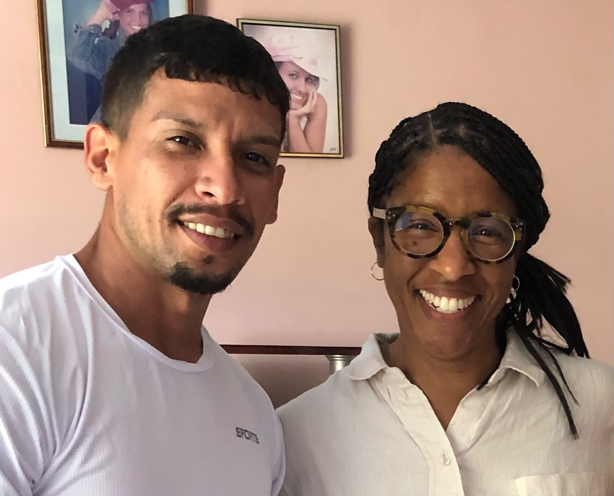
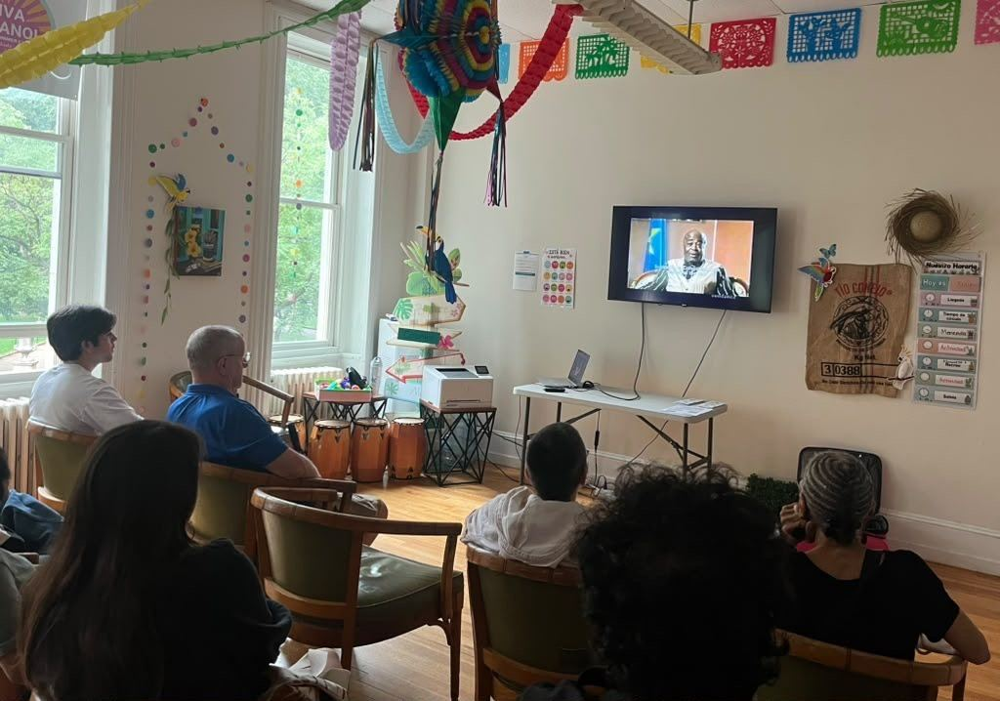
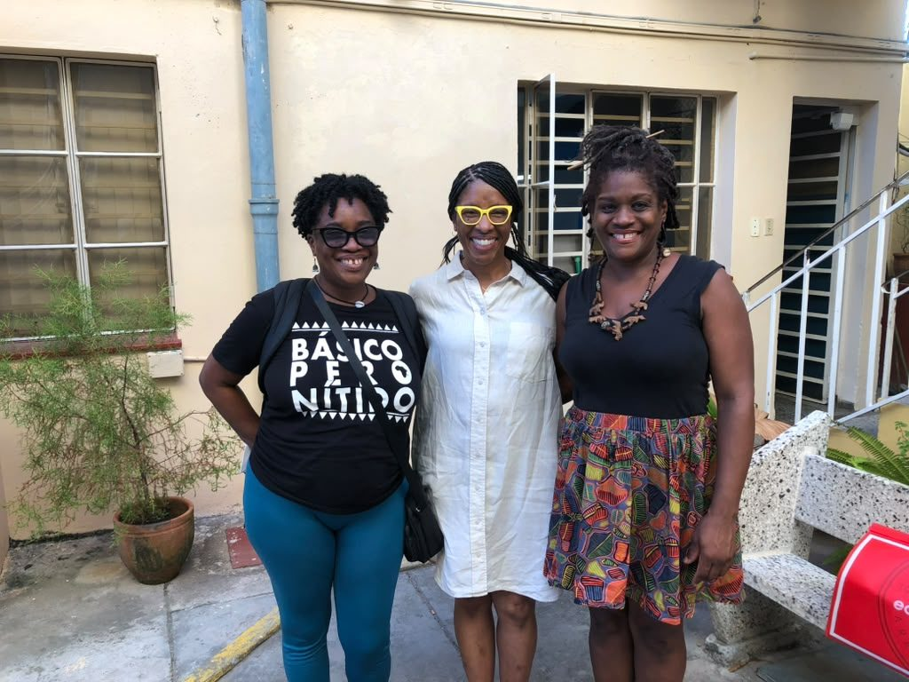
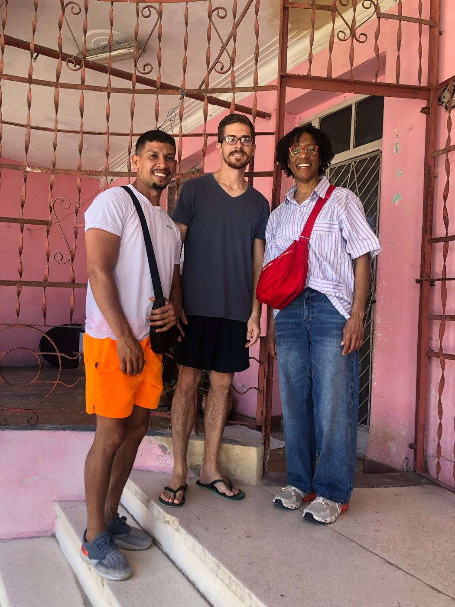
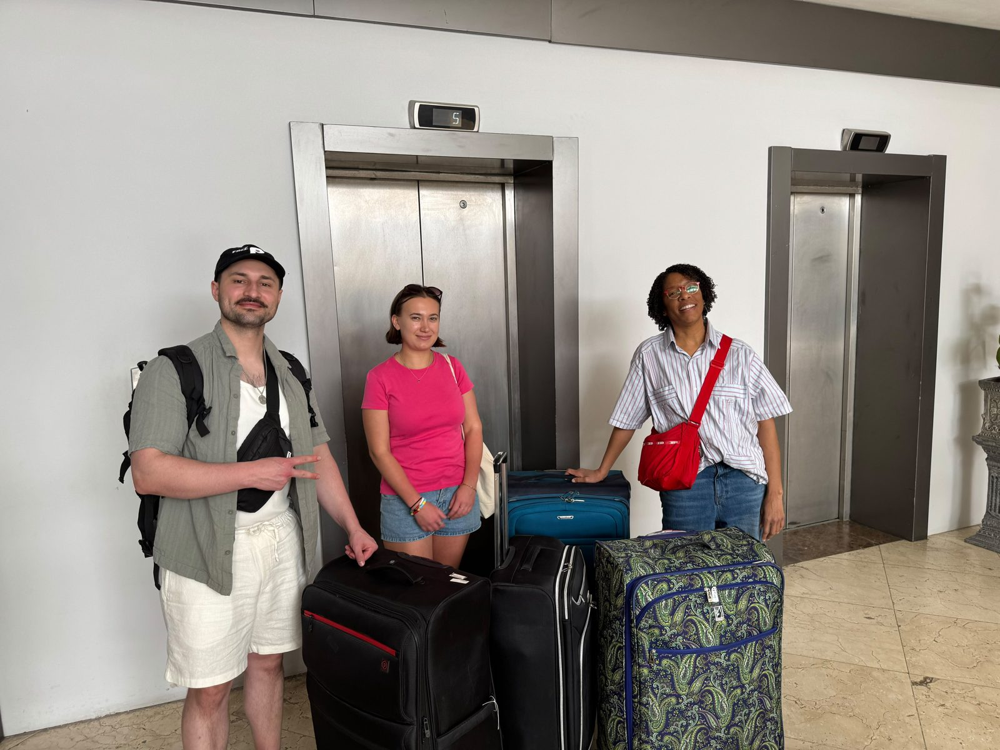
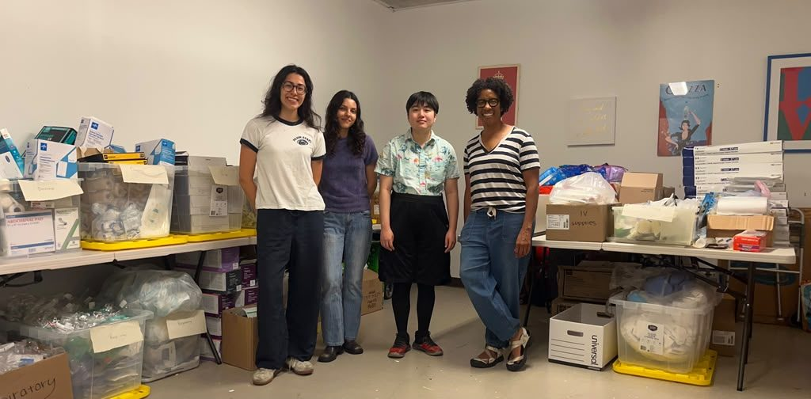
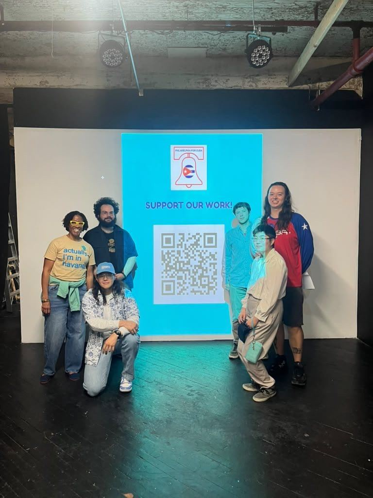
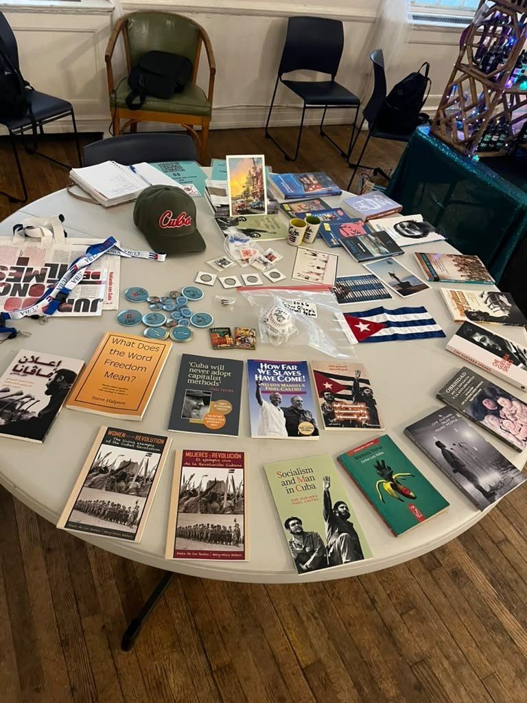

P4C 概览
- $1,9602026 年 5 月 31 日至 7 月 13 日期间通过 PAMA 捐给 P4C 的款项
- 53笔个人捐款，来自财务托管的最初几周
- 3个 Sara Gómez 电影放映之夜，11 月 20–22 日
数据来自 PAMA 财务记录。查看完整财务信息
认识创始人
Renee Quarterman 医生创立 P4C 时秉持一个简单的信念：医疗是整个西半球的共同责任，而不只是一个国家的责任。通过组织动员、社区教育和联盟建设，她打造了一个让医生、学生和邻里了解古巴医疗模式并为人道主义援助贡献力量的平台。
2026 年，PAMA 成为 P4C 的财务托管方，为该团体提供非营利组织架构、财务透明制度和物流支持，让 Quarterman 医生能够专注于使命，而不是文书工作。

最新：Sara Gómez 电影展

电影周末 · 2026 年 11 月 20–22 日
与一位开拓性的非裔古巴电影人共度三个夜晚
Sara Gómez（1942–1974）是古巴第一位执导故事片的女性。她的纪录片和唯一一部故事片展现了古巴的日常生活，坦率地探讨了种族、性别、家庭和工作等议题。
- 11 月 20 日（周五）· 下午 6–8 点 — 六部纪录短片
- 11 月 21 日（周六）· 下午 5–7 点 — 八部短片，包括《产前护理》（Prenatal Care）
- 11 月 22 日（周日）· 下午 3–5 点 — 《某种方式》（De Cierta Manera）
地点：The Philadelphia Ethical Society，1906 Rittenhouse Square
门票：每天 $15，或整个周末 $40
全部收益将用于 Global Health Partners 的母婴健康项目。
购票P4C 在社区中
从赴古巴的团结之旅，到在费城举办的宣讲会、电影放映和物资募集活动，P4C 将人们聚集在一起，了解古巴医学，并支持其服务的民众。






